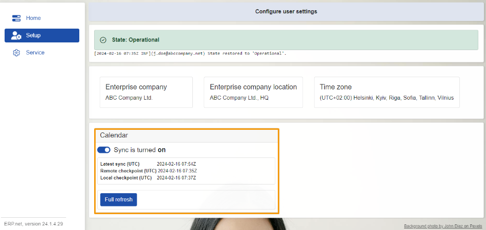

Setup
Within this section, you can find data about your default enterprise company - the one logged in MsSync, which includes details like location and time zone.
This section also showcases the state of the app, as visible in Home.
Below, there's a list of your sync tasks, with slider buttons built into them for toggling synchronization for on and off.

Just under the state message, you'll find an additional log detailing the latest change which occured for MsSync's state.

Company details
There's a panel containing data about your company, including its name, location, and time zone.
This information is automatically filled in by the system upon your login and is integral for the two-way synchronization process.
For example, if you're creating an event through Outlook's Calendar, these details cannot be filled from there as they are not required by default. As long as the connection with MsSync is properly configured, the Outlook event that will appear in the ERP.net Calendar will automatically pick up your default enterprise company data.

Note
You can choose your enterprise company in your profile settings.
A single profile can contain more than one company.

Note
If no enterprise company is specified, you will get a notification error indicating which sync job is affected.
Sync jobs
As in Home, there’s a panel representing your available sync jobs.
Here, alongside the latest sync, you'll notice two extra buttons:
- one for sync jobs activation and deactivation
- and another for refreshing the module.

Activate and deactivate synchronization
This button enables or disables the sync job assigned to it.
Simply toggle the slider button in the respective direction and the process will commence.
On first-time activation, the system will sync data for the past two weeks and the upcoming year.
Afterwards, synchronization will occur automatically every 15 minutes.
Full refresh
When you click on this button, synchronization for the respective job will refresh on-demand, reflecting the last two weeks and the upcoming year.

Note
The screenshots taken for this article are from v24 of the platform.